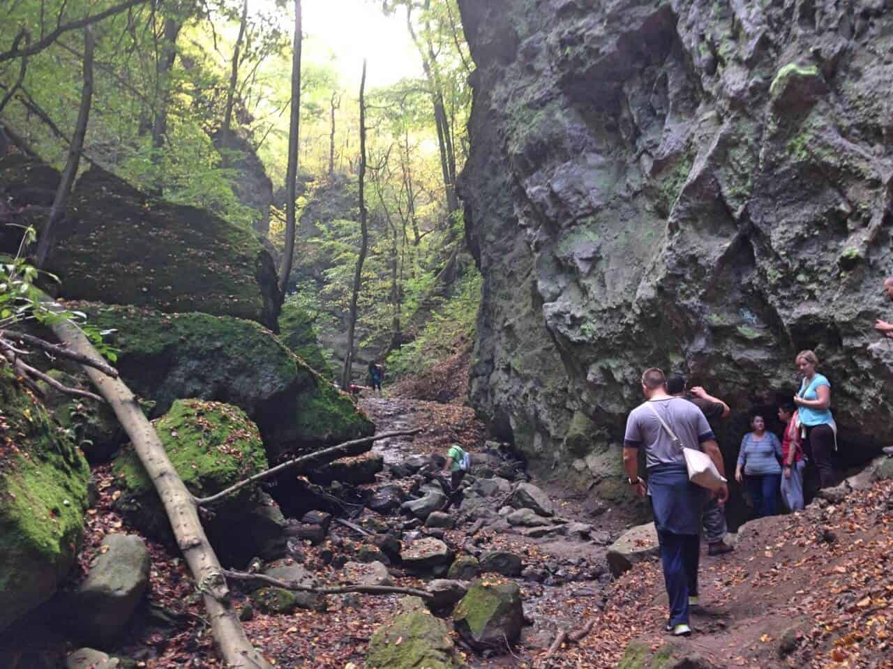
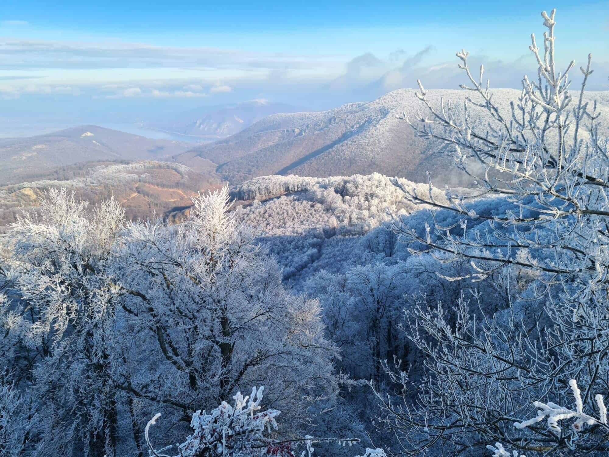

Rámszakadék-tanösvény
A Rám-szakadék a Dunakanyarban, Dömös közigazgatási területén található. A Rám-hegy tömbjébe vágódó Három-forrás-völgy különösen szép, egyik leglátogatottabb és vadregényes része.
A Rám-szakadék tanösvény Dömösről indul, és a Rám-szakadék felső pihenőjének érintésével a Lukács-árkon keresztül ér vissza a Szőke-forrás-völgybe. A szakadék bejáratánál elhelyezett információs táblák a tanösvény közlekedési rendjének szabályairól, illetve a tanösvény élővilágáról, geológiájáról és keletkezéséről tájékoztatnak. Ha nem jártál még a Rám-szakadékban, feltétlenül keresd fel, biztosan életed egyik legszebb kirándulós élménye lesz.
Az Északi-középhegység legnyugatibb középtája a Visegrádi-hegység, kb. 14-15 millió évvel ezelőtt, igen heves vulkáni tevékenység során keletkezett. A hegy kőzeteire jellemzők a vulkáni eredetű andezit, valamint az andezittörmelékes breccsába (szögletes, éles kőzettörmelék-darabokból összecementálódott kőzet) ágyazott kőtömbök, melyekből a kőzet felszínre kerülésével az esővíz és a fagy eróziós hatásának eredményeképpen meredek völgyek alakultak ki. Az itt kialakult szakadék, szurdokvölgy a rajta átvezető turistaúton kellő óvatossággal végigjárható. A kirándulás közben érdekes földtani jelenségeket láthatunk. A turistáknak összességében 112 m-es szintkülönbséget kell leküzdeniük. A szűk, meredek falakkal (melyek magassága eléri a 35 métert, szélessége pedig több helyen 3 méternél is kisebb) határolt mélyedés a különféle vulkáni rétegek keresztmetszetét adja. A puha tufában magas, függőleges falak, a víznek ellenálló keményebb lávarétegeken pedig zúgók, vízesések alakultak ki. A szakadékon keresztülfolyó Rám-patak a Szőke-forrás völgyén keresztül a Malom-patakba folyik.
Dobogókő
Dobogókő, a Visegrádi-hegység 700 méteres csúcsa sokkal több, mint egy hegytető: az egyik legnépszerűbb hazai kirándulóhely, gyógyító- és vallási zarándokhely, a hazai kirándulástörténet meghatározó helyszíne. Rengeteg színes, panorámás túra kiindulópontja. Dobogókőn áthalad az Országos Kéktúra útvonala vagy például többek között a Magyar Camino zarándokút is. Bármilyen céllal is érkezünk Dobogókőre, mindannyian hasonló érzésekkel távozunk majd: feltöltődve!
A vulkanikus eredetű kiemelkedés Pilisszentkereszt központjától északra, Budapest és Esztergom között nagyjából félúton helyezkedik el. Magassága 700 méter a tengerszint felett. A hegy tetejéről kiváló kilátás nyílik a Dunakanyarra, sőt, tiszta időben igen távoli hegyek is kivehetőek (például Mátra, Magas-Tátra). Dél felé lankásan emelkedik, észak felé viszont meredek sziklafalak és az ezekbe vágódott völgyek vezetnek a Duna felé. A legjelentősebb a Rám-szakadék.
A turistáskodás és síelés komoly múltra tekint vissza Dobogókőn. A 19. század végén a Magyar Turista Egyesület Thirring Gusztáv és Téry Ödön vezetésével elkezdte a turistautak kijelölését a környéken, mely a fővároshoz közeli fekvésének, a változatos erdei utaknak és a panorámának köszönhetően alkalmas kirándulóhely volt.[1] Dobogó-kőn épült az ország egyik első turistaháza, a báró Eötvös Loránd menedékház, melyet Pfinn József tervei alapján 1898-ban adtak át. A faház mellett 1906-ban felépült a nagyobb kőépület.
Holdvilág-árok
A Holdvilág-árok a Duna-Ipoly Nemzeti Park területén található Nagy-Csikóvár déli lejtőjén húzódik. Egy igazi belevaló kirándulóhely a Pilis hegység szívében! Aki erre a túrára vállalkozik, annak érdemes bakancsot húzni és a hátizsákot jól megpakolni. Kalandra fel!

Indulás előtt jó, ha felkészülünk, hogy ezen túra során fahidakon, falépcsőkön és meredek, csúszós időben akár veszélyesnek is mondható vaslétrán kell átjutnunk a célig. Egy biztos: páratlan látványban és élményben lesz részünk!
A sok túraútvonal közül az egyik lehetőség, ha Kiskovácsi-Kórház elől a piros kereszt jelzésen indulunk el. Ez az út vezet majd egyenesen a Holdvilág-árokhoz. Itt figyelmeztető és tájékoztató táblák segítik a haladást. A piros kereszt jelzésen nemsokára a Domini-forráshoz érkezünk, ahol ha ezen a jelzésen maradunk a szurdok végéhez, a Remete-barlanghoz jutunk.
Ha azonban a völgyben folytatnánk tovább a kirándulást, több izgalom vár ránk, a nagy vaslétrán a Meteor létrán kell felmásznunk. Menjünk egészenű addig, míg újra be nem kapcsolódik a piros kereszt jelzés. Nemsokára láthatjuk a piros négyzetet, ezen haladjunk tovább a Lajos-forrásig, onnan pedig a zöld háromszög vonalán Dömörkapu autóbusz állomásig túrázunk. Ezen az útvonalon garantált a gyönyörű kilátás. Természetesen kedvünkre alakíthatjuk kirándulásunkat, ez csak egy lehetőség a sok közül.
Régészeti kutatások során 1939-ben egy kehelytartó sírszobor töredékét, lócsontokat, egy 65 év körüli, honfoglalás korabeli férfi csontvázát és egy kristály méregpoharat találtak, de ezek 1953-ban rejtélyes módon eltűntek a Magyar Nemzeti Múzeumból. 1960-ban újabb ásatások során több, újabb középkori lelet és három rovásírásos kő került elő a Holdvilág-árok területén, ahol feltételezhetően egykor középkori nekropolisz állt. (forrás: wikipédia)